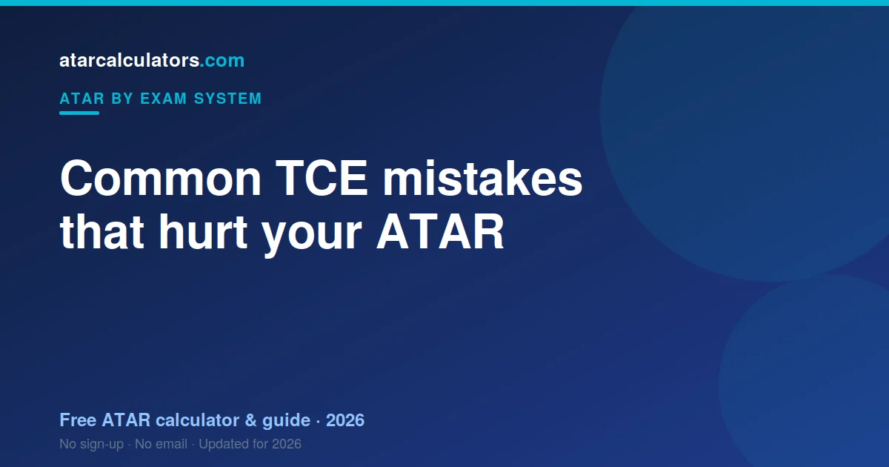

Common TCE mistakes that hurt your ATAR include choosing subjects only because they sound easy, ignoring how scaling works, neglecting your internal assessment, and leaving the English requirement to the last minute. Most are avoidable once you understand how the TCE and ATAR actually work.
Key takeaways
- Choosing subjects only because they sound easy can backfire.
- Ignoring scaling leads to poor subject choices.
- Neglecting internal assessment costs results across the year.
- Leaving the English requirement too late is risky.
- Dropping to a lower-scaling subject only helps if you rank higher in it.
- Understanding the system prevents most mistakes.

Mistake 1: Choosing subjects only because they sound easy
Choosing a subject because it sounds easy is a trap, and in Tasmania it has a second edge: an easy subject may not be Level 3 or 4 at all, in which case it contributes nothing to your ATAR regardless of your score.
Mistake 2: Ignoring how scaling works
TCE students underrate scaling, and often misread it. TASC scales each subject by its cohort, and Tasmania then adds your best five scaled scores in full to a TES out of 75 — a smaller scale, so each point of scaling is a larger share of your total.
Mistake 3: Neglecting internal assessment
Internal assessment carries real weight in Level 3 and 4 subjects. Treating the year as preparation for an exam throws away marks that are already banked before any exam is sat.
Mistake 4: Underrating the exams
External assessment contributes to your TCE result alongside your school work. Neglecting it undoes a strong year — and with a TES out of just 75, a few points lost is a visible share of your total.
Mistake 5: Leaving the English requirement late
The distinctly Tasmanian version of this mistake is not English — it is subject level. Only Level 3 and 4 pre-tertiary subjects count towards your ATAR. Discovering in Year 12 that a subject carries no ATAR weight is the most expensive surprise in the TCE.
Mistake 6: Chasing scaling blindly
The opposite mistake is taking Mathematics Methods or Physics purely because they scale. Tasmania counts five scores in full with no increments, so a weak score sits in your TES at full weight.
Mistake 7: Not keeping a safety subject
A safety subject matters in Tasmania because five scores count in full with no increments. There is no partial credit to soften a collapse — a weak fifth score sits in your TES at full weight.
Mistake 8: Poor time management
The TCE rewards steady work across the year. Cramming a Level 3 or 4 subject in the last month is how students end up with five subjects and only three decent scores.
Mistake 9: Not asking for help
Tasmania is a small state with small classes, which makes asking for help easier and skipping it more wasteful. Your teacher has time you are not using.
Mistake 10: Neglecting your wellbeing
Treating Year 12 as endurance backfires. Five scores count in full, so a burnt-out term shows up somewhere in your TES with nothing to absorb it.
How to avoid these mistakes
The common thread is checking two things early: that your subjects are Level 3 or 4, and that you can rank in them. Everything else follows.
See your real ATAR estimate
The best way to avoid these mistakes is to see how your choices play out. Our TCE ATAR calculator uses scaling to estimate your ATAR from your results.
Try different subjects and results to see what really moves your rank. It replaces guesswork with a clear picture.
Mistake 11: Comparing yourself to others
Comparing scores with friends is pointless. The ATAR is a rank, and in small Tasmanian cohorts your position can move on one assessment regardless of what anyone else did.
The one habit that prevents most mistakes
One habit prevents most of this: confirm your subject levels in Year 11, not Year 12. The most expensive TCE mistake is discovering too late that a subject never counted.
A note on subject selection
Subject choice in the TCE is really two decisions: is it Level 3 or 4, and can you rank in it? Get the first wrong and the second never matters.
The real cost of these mistakes
The cost lands hard because the TES runs to 75. A few points lost is a larger share of your total than the same points would be against an aggregate of 500.
Start where you are
Wherever your scores sit now, the useful question is which five are building your TES and whether all five are pre-tertiary.
Common questions
What are the most common TCE mistakes?
Common TCE mistakes include choosing subjects only because they sound easy, ignoring how scaling works, neglecting your internal assessment, and leaving the English requirement to the last minute.
Does subject choice affect my ATAR?
Yes, but not the way many think. Your ATAR uses your best results, so the subjects you score highly in matter most. A strong result in a subject you are good at beats a weak one in a high-scaling subject.
Is it bad to drop to a lower-scaling subject?
Only if you would have ranked higher in the subject you left. If a lower-scaling subject lets you rank near the top, it can produce a stronger scaled result than struggling in a high-scaling one.
How does internal ranking affect results?
In the TCE, your result combines internal and external assessment, then is scaled. Ranking well within each subject, against your cohort, is what produces a strong scaled score.